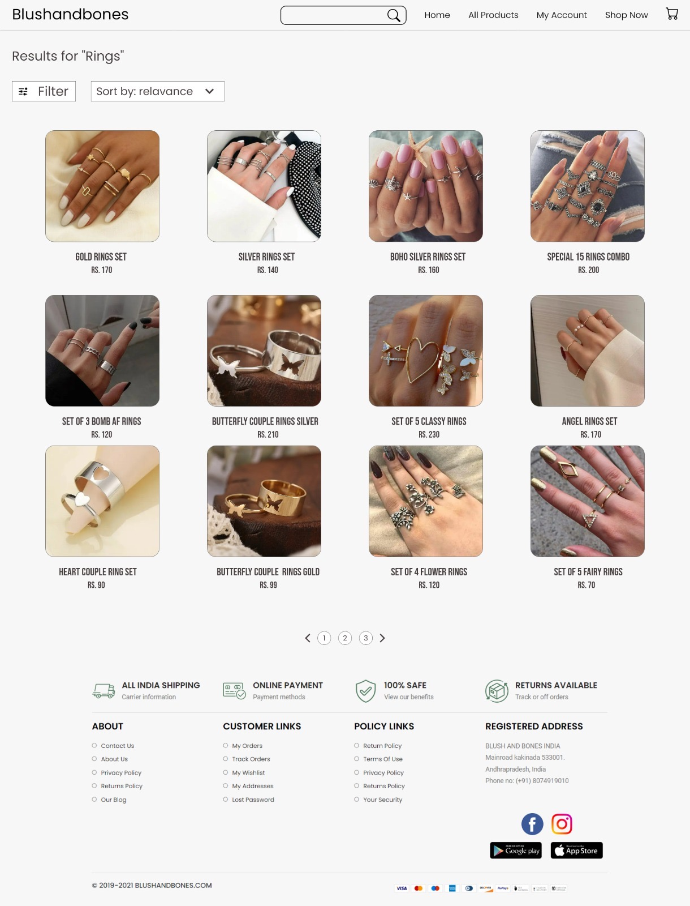
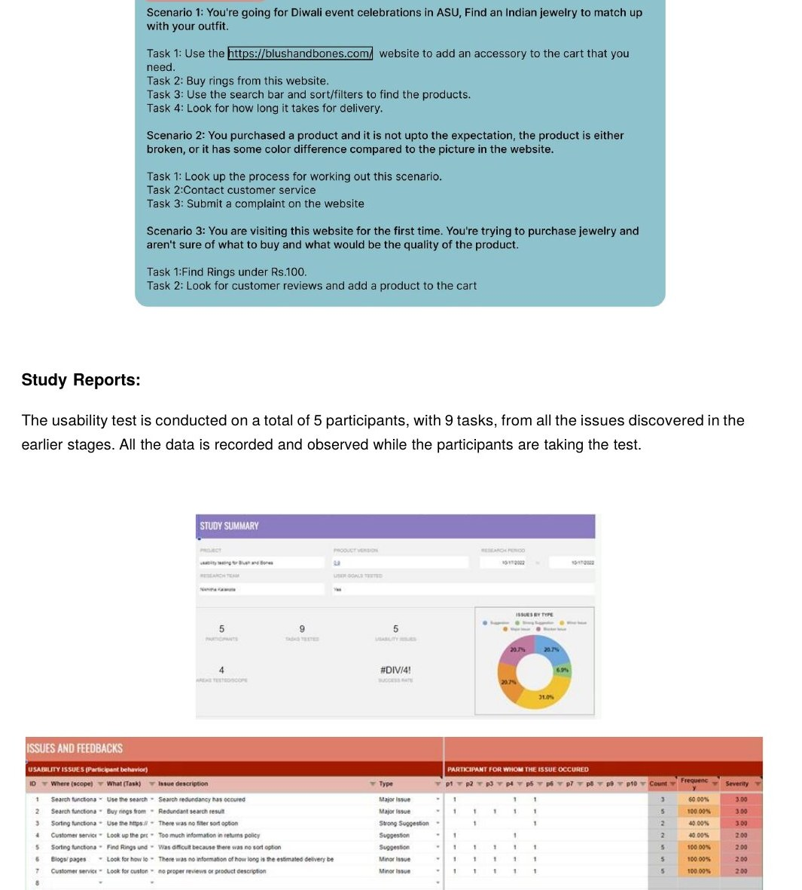
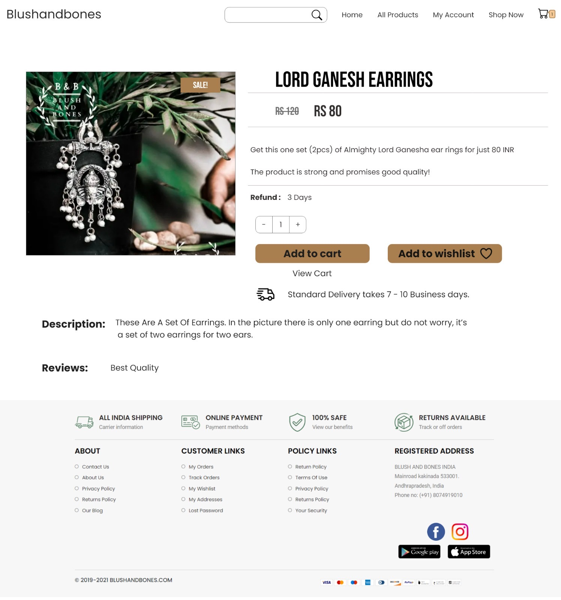

A full UX research sprint on a real Indian jewelry e-commerce platform, from heuristic evaluation and user interviews to moderated usability testing and a redesigned prototype.
The Problem
blushandbones.com had a passionate founder and a stunning curated collection of Indian jewelry, but redundant search, no sort or filter, broken social media links, and zero delivery estimates were costing real customers. I treated it as a live research lab.
User Personas
The Process

Original site — dense grid, no filter state shown, basic sort dropdown
Redesigned concept — new logo, filter chips, live result counts, badges, and a streamlined checkout. Slide through all 5 screens →
Issues Found
| Issue | Severity | Fix Delivered |
|---|---|---|
| Redundant search giving irrelevant results | Major | Category-based smart search |
| No sort or filter options in categories | Major | Sort + filter by price, color, size, type |
| Social media links lead to empty pages | Strong | Linked to active FB and Instagram |
| Too much information in returns policy | Minor | Simplified policy with clear sections |
| No estimated delivery time shown | Minor | Delivery estimate added to product pages |
| No customer reviews or product descriptions | Minor | Review system + reward incentives |

Usability testing study summary — 5 participants, 9 tasks, issues and frequency analysis
Outcome
"7 usability issues identified and resolved. Post-redesign: 5 of 9 tasks reached 100% completion rate. Core shopping flows fully resolved."
GIT542, UX Research Process, ASU
Completed · GIT542Revisiting the Redesign — 2026
The original recommendations still hold, smart search, sort and filter, reviews, delivery transparency, but I revisited the visual execution against 2026 UI conventions: a redrawn logo, pill-shaped filter chips, soft neutral palettes, real-time result counts, and a product page built around trust signals like verified reviews and clear return windows. The full 5-screen redesign is in the slider above, screen 4 is the rebuilt product page shown below for direct comparison.
Before · 2022
Original product page — condensed display type, no size/material info, single-line review
Redesigned concept — finish options, star ratings, savings badge, verified buyer reviews